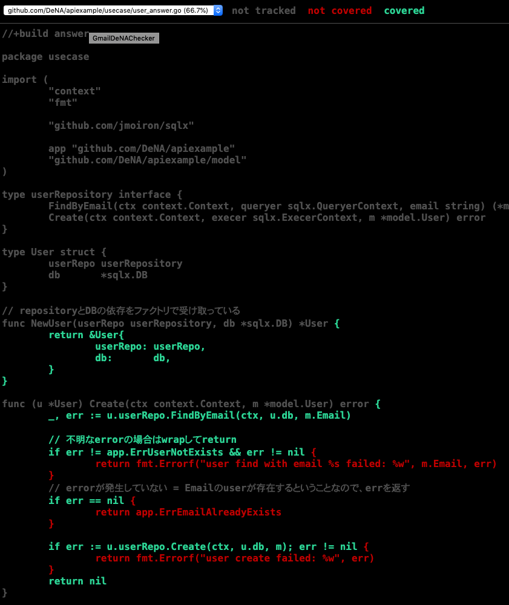

<!doctype html>

<html>
<head>
  <meta name="viewport" content="width=device-width, minimum-scale=1.0, initial-scale=1.0, user-scalable=yes">
  <meta name="theme-color" content="#4F7DC9">
  <meta charset="UTF-8">
  <title>テスタビリティの高いGoのAPIサーバを開発しよう（その3 ~テスト編~)</title>
  <link rel="stylesheet" href="//fonts.googleapis.com/css?family=Source+Code+Pro:400|Roboto:400,300,400italic,500,700|Roboto+Mono">
  <link rel="stylesheet" href="//fonts.googleapis.com/icon?family=Material+Icons">
  <link rel="stylesheet" href="https://storage.googleapis.com/codelab-elements/codelab-elements.css">
<link rel="stylesheet" href="../assets/style.css">
  <style>
    .success {
      color: #1e8e3e;
    }
    .error {
      color: red;
    }
  </style>
</head>
<body>
  <google-codelab-analytics gaid="UA-101877661-28"></google-codelab-analytics>
  <google-codelab codelab-gaid=""
                  id="testable-architecture-with-go-part3"
                  title="テスタビリティの高いGoのAPIサーバを開発しよう（その3 ~テスト編~)"
                  environment="web"
                  feedback-link="https://github.com/DeNA/codelabs/issues">
    
      <google-codelab-step label="概要" duration="0">
        <p><a href="https://dena.github.io/codelabs/testable-architecture-with-go-part2/#1" target="_blank">前回はこちら</a></p>
<p>Chapter1, Chapter2を通じ、Testabilityの高いアーキテクチャへのリファクタリングを行ってきました。 このChapterではTest Doubleを用いてテストの実装をします。 テストを実装することで、3層構造のアーキテクチャが持つ単方向の依存関係の利点などが実感できると思います。</p>
<p>では、まずはTest Doubleについて学びましょう。</p>
<h2 is-upgraded>Test Doubleについて</h2>
<p>Test Doubleとは、テスト対象の依存しているコンポーネントと置き換わり、本物そっくりに振る舞う代役（=double)のことです。 間接入力と間接出力の制御および可視化を実現します。</p>
<ul>
<li>間接入力とは  <ul>
<li>依存コンポーネントからテスト対象への入力</li>
<li>例： RepositoryからDBのデータ読み出し</li>
</ul>
</li>
<li>間接出力とは  <ul>
<li>テスト対象から依存コンポーネントへの出力</li>
<li>例： RepositoryからDBへのデータ書き込み</li>
</ul>
</li>
</ul>
<h2 is-upgraded>Test Doubleの種類</h2>
<p>Test Doubleにはスタブ、 フェイク、 スパイ、 モック、 ダミーの5つの種類があります。 ここではそれぞれについて簡単に解説します。</p>
<h3 is-upgraded>スタブ</h3>
<p>テスト対象への間接入力を、事前に定義した任意の値に置き換えるTest Doubleです。 依存コンポーネントをスタブに差し替えることで、特定の要件を満たしたテストを実現できます。</p>
<p>Goでの実装例</p>
<p>現在時刻を取得する関数を定義し、テスト時に自分が都合が良い時間を返すように差し替えることができる実装パターンです。</p>
<pre><code language="language-go" class="language-go">// アプリケーションコード
var now func() time.Time = time.Now
</code></pre>
<pre><code language="language-go" class="language-go">// テストコード
now = func() time.Time {
   return time.Date(2020, time.March, 4, 0, 0, 0, 0, time.UTC)
}
</code></pre>
<p><a href="https://play.golang.org/p/nN0pSZ_nD9l" target="_blank">playground</a></p>
<h3 is-upgraded>スパイ</h3>
<p>テスト対象の間接出力を記録し、後からテストコードでその出力を検証できるようにするTest Doubleです。 以下は <code>http.ResponseWriter</code> インターフェースを満たしている間接出力の記録用の実装である <code>httptest.ResponseRecorder</code> を使って検証している例です。</p>
<pre><code language="language-go" class="language-go">func main() {
    handler := func(w http.ResponseWriter, r *http.Request) {
        io.WriteString(w, &#34;&lt;html&gt;&lt;body&gt;Hello World!&lt;/body&gt;&lt;/html&gt;&#34;)
    }

    req := httptest.NewRequest(&#34;GET&#34;, &#34;http://example.com/foo&#34;, nil)
    w := httptest.NewRecorder()
    handler(w, req)

    resp := w.Result()
    body, _ := ioutil.ReadAll(resp.Body)

    fmt.Println(resp.StatusCode)
    fmt.Println(resp.Header.Get(&#34;Content-Type&#34;))
    fmt.Println(string(body))
}
</code></pre>
<p><a href="https://play.golang.org/p/y_M3RA0YUDB" target="_blank">playground</a></p>
<h3 is-upgraded>モック</h3>
<p>事前に間接出力の期待値を設定し、テスト実行時に実際の出力と期待値を検証するTest Doubleです。 スパイではテストコード側で間接出力の検証しますが、モックはモックオブジェクト自身で期待値との検証をする点が異なります。</p>
<h3 is-upgraded>フェイク</h3>
<p>実際のコンポーネントと同等か、それに極めて近い挙動を持つTest Double。</p>
<h3 is-upgraded>ダミー</h3>
<p>テストに影響を与えない代替オブジェクト。 テストには関係ないが、テスト対象の生成時やメソッドのパラメータとしてオブジェクトが必要なときに使用します。 (例： nullオブジェクト）</p>
<h2 is-upgraded>まとめ</h2>
<p>Test Doubleに関して簡単に知識を整理しました。次のStepからは実際にTest Doubleを実装し、テストを書いていきます。 Chapter1に出てきた、『テスト時にこの状態をどれだけ「簡単」に「安定して」作り出せるか』という観点を意識しながらテストを書いていきましょう。 このcodelabではフェイクを除くTest Doubleをライブラリを使わずに実装します。</p>


      </google-codelab-step>
    
      <google-codelab-step label="usecaseのテスト" duration="10">
        <p><code>usecase</code>のテストを書いていきます。このテストでは、DBアクセスは行わず、 <code>repository</code>は <strong>Test Double</strong> に置き換え、中身のロジックに注目してテストを書いていくことにします。</p>
<p><code>usecase/user_test.go</code>のファイルを開いてみましょう。<code>Create</code>のテストの雛形が書かれています。 ここにテストを実装していきます。</p>
<pre><code language="language-go" class="language-go">// Userの作成に成功するケース
func TestUser_Create(t *testing.T) {
	t.Skip(&#34;TODO: not implemented&#34;)
}
</code></pre>
<h2 is-upgraded>Test Doubleの作成</h2>
<p><code>t.Skip</code>の行を削除し、テストを書き始めます。 まずは、テストの対象となる構造体（= <code>User</code>)の初期化を行いましょう。 構造体の初期化はFactory Methodを用意していました。このメソッドを使いましょう。</p>
<pre><code language="language-go" class="language-go">...
func TestUser_Create(t *testing.T) {
    sut := NewUser(???, nil)
    ...
}
</code></pre>
<p>ですが、引数の依存には何を渡せばよいのでしょうか。 第2引数の<code>*sqlx.DB</code>は、本物のDBにアクセスするために使うものなので、今回は必要ありません。 ですので、<code>nil</code>を渡します。( = <strong>dummy object</strong> )</p>
<p>依存の第1引数の<code>userRepository</code>をTest Doubleに置き換えます。まずはStubとして定義してみましょう。</p>
<pre><code language="language-go" class="language-go">type userRepositoryStub struct{}

func (s *userRepositoryStub) FindByEmail(ctx context.Context, queryer sqlx.QueryerContext, email string) (*model.User, error) {
	return nil, nil
}

func (s *userRepositoryStub) Create(ctx context.Context, execer sqlx.ExecerContext, m *model.User) error {
	return nil
}
</code></pre>
<p><code>userRepository</code>の<code>interface</code>を満たすような構造体を定義します。一旦返り値は全て<code>nil</code>で定義しましょう。 この<code>Test Double</code>を用いて、初期化を行います。</p>
<pre><code language="language-go" class="language-go">userUsecase := NewUser(&amp;userRepositoryStub{}, nil)
</code></pre>
<p><code>Create()</code>を呼び出し、<code>err</code>のチェックを行います。 <code>Create()</code>にわたすcontextは、<code>context.Background()</code>を用い、<code>model.User</code>は適当な値をいれて呼び出してみましょう。</p>
<pre><code language="language-go" class="language-go">if err := userUsecase.Create(context.Background(), &amp;model.User{
	FirstName:    &#34;test_first_name&#34;,
	LastName:     &#34;test_last_name&#34;,
	Email:        &#34;test@example.com&#34;,
	PasswordHash: &#34;aaa&#34;,
}); err != nil {
	t.Fatal(err)
}
</code></pre>
<p><code>usecase</code>のディレクトリに移動して、<code>go test</code>を呼び出してみます。 （なお、DBのSetupが必要ないので、Docker等を立ち上げる必要がありません）</p>
<pre><code>$ cd internal/usecase
$ go test .
</code></pre>
<p>Failしていますね。</p>
<pre><code>% go test . 
--- FAIL: TestUser_Create (0.00s)
    user_test.go:33: すでに登録されています
FAIL
FAIL	github.dena.jp/swet/go-sampleapi/internal/usecase	0.158s
FAIL
</code></pre>
<p>Chapter2を思い出すと、<code>FindByEmail</code>は、<code>ErrUserNotExists</code>をreturnするのが正常系でした。そのように<code>userReporitoryStub</code>を修正してみましょう。</p>
<pre><code language="language-go" class="language-go">func (s *userRepositoryStub) FindByEmail(ctx context.Context, queryer sqlx.QueryerContext, email string) (*model.User, error) {
-	return nil, nil
+	return nil, apierr.ErrUserNotExists
}
</code></pre>
<p>もう一度Testを走らせます。</p>
<pre><code>$ go test .
ok  	github.dena.jp/swet/go-sampleapi/internal/usecase	1.848s
</code></pre>
<p>今度はPassしています！おめでとうございます、これでStubを使ったTestを通過させることができました！</p>
<h2 is-upgraded>Test Doubleの改善</h2>
<p>とはいえ、このテストでは何を検証しているのかがわかりません。 もう少しStubに手を加え、詳しい検証をできるようにしてみましょう。</p>
<p>以下のコードをcopyしてテストコードに貼り付けてください。</p>
<pre><code language="language-go" class="language-go">type userRepositoryMock struct{
	findByEmailFn func(ctx context.Context, queryer sqlx.QueryerContext, email string) (*model.User, error)
	createFn func(ctx context.Context, execer sqlx.ExecerContext, m *model.User) error
}

func (s *userRepositoryMock) FindByEmail(ctx context.Context, queryer sqlx.QueryerContext, email string) (*model.User, error) {
	return s.findByEmailFn(ctx, queryer, email)
}

func (s *userRepositoryMock) Create(ctx context.Context, execer sqlx.ExecerContext, m *model.User) error {
	return s.createFn(ctx, execer, m)
}
</code></pre>
<p>ややトリッキーな実装ですが、Goで複数のメソッドを持つ構造体をTest doubleに置き換えるときに使う実装パターンの1つです。 構造体のメンバとして、自身のメソッドと同じシグネチャを持つ関数を用意します。</p>
<p>さて、この実装を使って先程のTestを書き直してみます。</p>
<pre><code language="language-go" class="language-go">func TestUser_Create(t *testing.T) {
	mock  := &amp;userRepositoryMock{
		findByEmailFn: func(ctx context.Context, queryer sqlx.QueryerContext, email string) (user *model.User, err error) {
			return nil, apierr.ErrUserNotExists
		},
		createFn: func(ctx context.Context, execer sqlx.ExecerContext, m *model.User) error {
			return nil
		},
	}
	userUsecase := NewUser(mock, nil)

	if err := userUsecase.Create(context.Background(), &amp;model.User{
		FirstName:    &#34;test_first_name&#34;,
		LastName:     &#34;test_last_name&#34;,
		Email:        &#34;test@example.com&#34;,
		PasswordHash: &#34;aaa&#34;,
	}); err != nil {
		t.Fatal(err)
	}
}
</code></pre>
<p>先程のTestと比較して、<strong>Test Doubleの宣言時ではなく、初期化時にTest Doubleの振る舞いを宣言できるように</strong> なっています。 Test Doubleの初期化時に関数を挟み込み、振る舞いをhackするのがポイントですね。</p>
<p>以前の実装と比較すると、この実装パターンにはメリットがいくつかあります。</p>
<ul>
<li>Goは関数内ではstructの宣言ができないので、Test Doubleの振る舞いを変えるごとに構造体を用意する必要があったが、このパターンであれば構造体の宣言は1回で良い。</li>
<li>呼び出された関数の引数の検証ができるつまり、StubやMockなど、テストに応じて都合が良い形に実装し直すことができる。</li>
</ul>
<p>先ほどのTestを改良し、<code>FindByEmail</code>が、<code>test@example.com</code> (<code>Create</code>に渡している値）の引数で呼ばれているかをチェックする部分を追加してみます。</p>
<pre><code language="language-go" class="language-go">mock  := &amp;userRepositoryMock{
	findByEmailFn: func(ctx context.Context, queryer sqlx.QueryerContext, email string) (user *model.User, err error) {
		if email != &#34;test@example.com&#34; {
			t.Errorf(&#34;email must be test@example.com but %s&#34;, email)
		}
		return nil, apierr.ErrUserNotExists
   },
....
</code></pre>
<p>このように、関数の内部で、<code>assertion</code>を書くことができます。これでTestを実行してみましょう。</p>
<pre><code>$ go test .
ok  	github.dena.jp/swet/go-sampleapi/internal/usecase	1.848s
</code></pre>
<p>問題なくPassするはずです。これで<code>Mock</code>としての役割を果たすこともできるようになりました。</p>
<h2 is-upgraded>(Optional) Spyを作る</h2>
<p>同様の実装パターンを使うことにより、Spyも簡単に作ることができます。 <code>FindByEmail</code>の呼び出しの際の<code>email</code>を記録し、後で比較をするようなtestを書いてみましょう。</p>
<pre><code language="language-go" class="language-go">func TestUser_Create(t *testing.T) {
	var passedMail string
	mock  := &amp;userRepositoryMock{
		findByEmailFn: func(ctx context.Context, queryer sqlx.QueryerContext, email string) (user *model.User, err error) {
			passedMail = email
			return nil, app.ErrUserNotExists
		},
		createFn: func(ctx context.Context, execer sqlx.ExecerContext, m *model.User) error {
			return nil
		},
	}
	userUsecase := NewUser(mock, nil)

	if err := userUsecase.Create(context.Background(), &amp;model.User{
		FirstName:    &#34;test_first_name&#34;,
		LastName:     &#34;test_last_name&#34;,
		Email:        &#34;test@example.com&#34;,
		PasswordHash: &#34;aaa&#34;,
	}); err != nil {
		t.Fatal(err)
	}

	if passedMail != &#34;test@example.com&#34; {
		t.Errorf(&#34;email must be test@example.com but %s&#34;, passedMail)
	}
}
</code></pre>
<p>とてもシンプルですが、これでSpyとしての役割を果たすことができました。</p>
<aside class="special"><p><strong>TIPS: Mockに関するライブラリ<br></strong> Goでは、Test Doubleの作成を簡単にするライブラリがいくつかあります。<br> 最も有名なものは<a href="https://github.com/golang/mock" target="_blank">golang/mock</a>だと思います。今回のアプローチとは全く異なるやり方で実装されているので、興味がある方は調べてみてください。</p>
</aside>
<aside class="special"><p><strong>TIPS: Test Doubleを自動生成する<br></strong> 今回の、構造体のメンバに関数を渡すようなスタイルで実装するTest Doubleは、 <code>interface</code>の型が決まればシグネチャは決定されます。そのため、ソースコードの自動生成と非常に相性が良く、実際に<code>interface</code>からこのstyleのtest doubleを自動生成するツールはいくつかあります。<br><a href="https://github.com/orisano/impast#mocker" target="_blank">orisano/impast</a>などです。こちらも、興味がある方は調べてみてください。</p>
</aside>
<h2 is-upgraded>完了</h2>
<p>これで複雑な検証も可能になるようなTest Doubleを実装できました！ では、次に色々なケースのTestを実装してみましょう。</p>


      </google-codelab-step>
    
      <google-codelab-step label="テストを実装してみよう" duration="10">
        <aside class="special"><p><strong>実装してみよう<br></strong><code>usecase/user_test.go</code>には、他にも空実装になっているtest caseがあります。Test Doubleを使ってこの中身を実装してみましょう。 それ以外にも、思いつくケースがあったらtestを実装してみましょう。</p>
</aside>
<pre><code language="language-go" class="language-go">// Repositoryからユーザが正しく返ってきたケース
func TestUser_Create_DuplicateEmail(t *testing.T) {
	t.Skip(&#34;not implemented&#34;)
}

// RepositoryのCreateが失敗したケース
func TestUser_Create_Failed(t *testing.T) {
	t.Skip(&#34;not implemented&#34;)
}
</code></pre>
<ul>
<li><code>TestUser_Create_DuplicateEmail</code>のTest Caseでは、<code>usecase.User</code>の<code>Create</code>から<code>return</code>される<code>err</code>の種類もチェックしてみましょう。<code>err</code>の種類のチェックには、<code>errors.Is</code>が使えましたね。</li>
<li><code>TestUser_Create_Failed</code>のTest Case、つまり、insertに失敗するケースは、システムの仕様上は想定していないケースです。想定されていないケースのテストまでを行うかどうかはプロジェクトのテスト方針によるかとは思いますが、Test Doubleを使う練習として、このケースもテストを書いてみましょう。</li>
</ul>
<h2 is-upgraded>実装が終わったら</h2>
<p>Testを実行し、Passしていることを確認しましょう。</p>
<pre><code>$ go test .
ok  	github.dena.jp/swet/go-sampleapi/internal/usecase	0.022s
</code></pre>
<aside class="special"><p><strong>TIPS: t.Error()/t.Fatal()に書くメッセージ<br></strong> 「テストの作成者は、テストの失敗の原因を究明しなければならないプログラマに役立つように務めるべきです」 (アラン・ドノバン、 ブライアン・カーニハン著、 柴田芳樹訳、『プログラミング言語Go』丸善出版）より。<br><code>t.Errorf()</code>等に書くメッセージは面倒でもエラーの原因がわかるように書きましょう。<br>与えられたパラメータと、何が原因で失敗したのかを出力すると効果的です。</p>
</aside>


      </google-codelab-step>
    
      <google-codelab-step label="coverageを測定しよう" duration="5">
        <p>Testが実装しおわったら、<code>go test</code>を使ってtest coverageを測定してみましょう。 <code>-cover</code>オプションを付けると、<code>coverage</code>を測定してくれます。</p>
<p><code>internal/usecase</code>に移動し、実行してみましょう。</p>
<pre><code>$ go test -cover .
ok  	github.dena.jp/swet/go-sampleapi/internal/usecase	5.633s	coverage: 66.7% of statements
</code></pre>
<p>coverageが出力されました。</p>
<p>Line by Lineでcoverageが見たい場合は、<code>-coverprofile</code>オプションを使い、coverageをファイルに書き出します。</p>
<pre><code>$ go test -cover -coverprofile=cover.out .
ok  	github.dena.jp/swet/go-sampleapi/internal/usecase	5.633s	coverage: 66.7% of statements
</code></pre>
<p><code>go tool cover</code>を使うことにより、htmlでcoverageを見ることができます。</p>
<pre><code>$ go tool cover -html=cover.out
</code></pre>
<p>すると、browserが開き、以下のような画面が見えるはずです。</p>
<p class="image-container"></p>
<p>Testが通過した場所は緑の文字で、そうではない場所が赤の文字で表示されます。 無理してCoverage 100%にする必要はないですが、通過してない場所で重要そうな場所があるようでしたら、 これをヒントにTestを追加してみましょう。</p>
<h3 is-upgraded>E2EのCoverage</h3>
<p>Chapter1でE2Eテストを書きましたが、このtestでもcoverageが取得できます。 ですが、<code>go test</code>はデフォルトだと、テスト対象のpackageのcoverageしか取得できません。 <code>e2e</code>のように、testのpackageと、test対象のpackageが分かれている場合は、<code>-coverpkg</code>フラグを設定する必要があります。</p>
<p>applicationのrootディレクトリに行き、以下のコマンドを入力してください。</p>
<pre><code>$ make compose/up/db # test dbの立ち上げ
$ go test -coverpkg=./... -coverprofile=cover.out ./e2e/...
ok  	github.dena.jp/swet/go-sampleapi/internal/usecase	0.496s	coverage: 59.6% of statements in ./...
</code></pre>
<p><code>coverpkg</code>でcoverage取得対象のpackageを指定することにより、coverageの取得ができます。<code>cover.out</code>を<code>go tool cover</code>で開き、coverageを確認してみましょう。</p>


      </google-codelab-step>
    
      <google-codelab-step label="(Optional) repositoryのテスト" duration="5">
        <h2 is-upgraded>Test戦略</h2>
<p><code>repository</code>の層にもテストを書いてみましょう。<code>repository</code>のテストでは、DBのアクセスを抽象化するレイヤです。 logic部分は<code>usecase</code>に切り出したので、<code>repository</code>のテストは、そこに書かれているSQLが正しく動作するのか、をチェックするテストを書いてみましょう。 ここでのテストは、大まかに1) DBをTest Doubleにするのか、2) 本物のDBを使うのか、の2つの戦略が考えられます。</p>
<p>ローカル環境やCI環境でTest用のDBを用意するのが困難な場合、Test Doubleに置き換えてTestを行うというのはよく行われているかと思います。 ただ、今回の場合は、MySQLを使っており、dockerを使えば容易にどの環境でもTest用のDBを立ち上げることができ、 また、SQLが正しく動作するのかをDBを使わずにチェックするのは非常に難しいという問題もあり、 2)の戦略をとってTestを書いていきます。</p>
<h2 is-upgraded>TestのSetUp &amp; CleanUp</h2>
<p><code>repository/user_test.go</code>を開くと、同様にTestの雛形が書かれていると思います。</p>
<pre><code language="language-go" class="language-go">func TestUser_FindByEmail(t *testing.T) {
	db := sqlx.MustConnect(&#34;mysql&#34;, app.Config().DBSrc())
	defer func() {
		// DBのCleanup
		db.MustExec(&#34;set foreign_key_checks = 0&#34;)
		db.MustExec(&#34;truncate table users&#34;)
		db.MustExec(&#34;set foreign_key_checks = 1&#34;)
		db.Close()
	}()

    ~ 省略 ~
</code></pre>
<p><code>e2e</code>でも同様の手順を踏んでいますが、最初にTestで使うDBのSetupと、<code>defer</code>により、testで使ったDBをcleanupしています。</p>
<aside class="special"><p><strong>TIPS: Go1.14から入る</strong><code>t.Cleanup()</code><strong>について<br></strong><code>defer</code>で行っているDBのCleanup処理ですが、Go1.14からは<code>t.Cleanup()</code>というCleanup専用の関数が用意され、そちらを利用できます。</p>
</aside>
<p>(Go1.14から）</p>
<pre><code language="language-go" class="language-go">func TestUser_FindByEmail(t *testing.T) {
    db := sqlx.MustConnect(&#34;mysql&#34;, app.Config().DBSrc())
    t.Cleanup(func() {
	// DBのCleanup
		db.MustExec(&#34;set foreign_key_checks = 0&#34;)
		db.MustExec(&#34;truncate table users&#34;)
		db.MustExec(&#34;set foreign_key_checks = 1&#34;)
		db.Close()
    })
</code></pre>
<h2 is-upgraded>Testの実装</h2>
<p><code>expect</code>という変数名で定義されている<code>model.User</code>のコメントアウトを外し、 <code>TODO</code>コメントのある場所に実装をしていきましょう。</p>
<h3 is-upgraded>Test Fixturesの投入</h3>
<p>DBにfixturesをinsertします。 <code>e2e/user_handler_test.go</code>からcopyしてきて、Valueの部分を書き換えましょう。</p>
<pre><code language="language-go" class="language-go">	db.MustExec(&#34;insert into users(first_name, last_name, email, password_hash) values (?, ?, ?, ?)&#34;,
        expect.FirstName, expect.LastName, expect.Email, expect.PasswordHash)
</code></pre>
<h3 is-upgraded>FindByEmailを呼び出す</h3>
<p><code>repository</code>を初期化し、メソッドを呼び出しましょう。 第2引数の<code>sqlx.QueryerContext</code>は、Setupで初期化した<code>db</code>を渡すことができます。</p>
<pre><code language="language-go" class="language-go">repo := NewUser()
u, err := repo.FindByEmail(context.Background(), db, &#34;test@example.com&#34;)
if err != nil {
	t.Fatal(err)
}
</code></pre>
<h3 is-upgraded>GetしたModelとexpectを比較する</h3>
<p><code>FindByEmail</code>の各パラメータが、想定の値（expect)に合致しているかをチェックしましょう。 <code>ID</code>はDBに依存して値が割り振られるので、今回はチェックしません。</p>
<pre><code language="language-go" class="language-go">if u.Email != expect.Email {
	t.Errorf(&#34;email must be %s but %s&#34;, expect.Email, u.Email)
}
if u.PasswordHash != expect.PasswordHash {
	t.Errorf(&#34;password_hash must be %s but %s&#34;, expect.PasswordHash, u.PasswordHash)
}
if u.FirstName != expect.FirstName {
	t.Errorf(&#34;first_name must be %s but %s&#34;, expect.FirstName, u.FirstName)
}
if u.LastName != expect.LastName {
	t.Errorf(&#34;last_name must be %s but %s&#34;, expect.LastName, u.LastName)
}
</code></pre>
<aside class="special"><p><strong>TIPS: </strong><code>reflect.DeepEqual</code><strong>について<br></strong> 構造体同士の比較を簡単に行う<a href="https://golang.org/pkg/reflect/#DeepEqual" target="_blank">reflect.DeepEqual</a>というメソッドもあります。ここでは、どのIDがDBにより採番されるかを事前に知るのは難しいので、使っていませんが、構造体、Slice、mapなどの比較に用いることができるので、テスト時には重宝する関数です。 ぜひ使って見てください。 また、比較結果があったときにdiffを見やすく表示してくれる<a href="https://github.com/google/go-cmp" target="_blank">go-cmp</a>というライブラリもあります。興味があったら調べてみましょう。</p>
</aside>
<h3 is-upgraded>実行</h3>
<p>まず、テスト用のDBを立ち上げましょう。アプリケーションのroot directoryに行き、</p>
<pre><code>$ make compose/up/db
</code></pre>
<p>と入力してください。その後、<code>repository</code>のディレクトリに移動し、</p>
<pre><code>$ go test -v .
</code></pre>
<p>と入力してください。</p>
<pre><code>=== RUN   TestUser_FindByEmail
--- PASS: TestUser_FindByEmail (0.03s)
PASS
ok      github.dena.jp/swet/go-sampleapi/internal/repository   0.068s
</code></pre>
<p>PASSしていればOKです。</p>
<h2 is-upgraded>他のケースを実装してみよう</h2>
<aside class="special"><p><strong>実装してみよう<br></strong> 時間の許す限り、<code>FindByEmail</code>の他のケースや、<code>Create</code>のテストを実装してみましょう。 また、Coverageも取得してみましょう。</p>
</aside>
<h2 is-upgraded>完了</h2>
<p><code>repository</code>のテストを実装してみました。 Test Doubleで内部状態を操作するよりも、手間が多く、testの結果の比較にも一工夫必要なケースも多い領域です。 特に、Test Dataのメンテナンスにコストがかかることが多いレイヤなので、事前にチーム内でどこまでテストをやるのか、ということの合意をとっておくと、より効果的だと思います。</p>


      </google-codelab-step>
    
      <google-codelab-step label="まとめ" duration="0">
        <p>これにてcodelabは完了です！</p>
<p>最初は、Testを行うためにはDBにSQLを発行し、想定される状態を作ってからでないとTestが実行できませんでした。 この方法は、DBの構造の変化や、テストの並列化などに弱く、複雑な条件をチェックするのには向いていない方式でした。 このリファクタを通じ、Test Doubleを自由に実装することで、よりロジックに集中したテストの実装が可能になったと思います。 なにか1つでも持ち帰っていただけるものがあればと思っています！</p>
<p>お疲れさまでした！</p>


      </google-codelab-step>
    
  </google-codelab>

  <script src="https://storage.googleapis.com/codelab-elements/native-shim.js"></script>
  <script src="https://storage.googleapis.com/codelab-elements/custom-elements.min.js"></script>
  <script src="https://storage.googleapis.com/codelab-elements/prettify.js"></script>
  <script src="https://storage.googleapis.com/codelab-elements/codelab-elements.js"></script>
  <script src="//support.google.com/inapp/api.js"></script>

</body>
</html>
